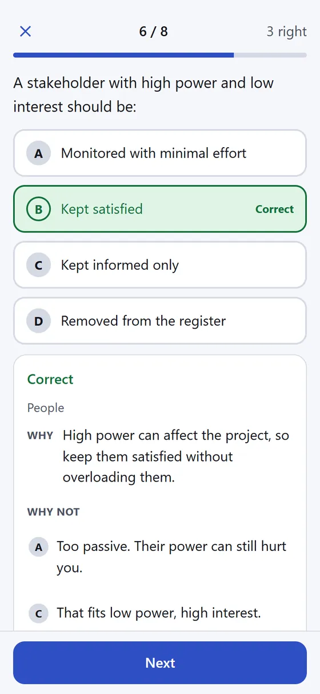
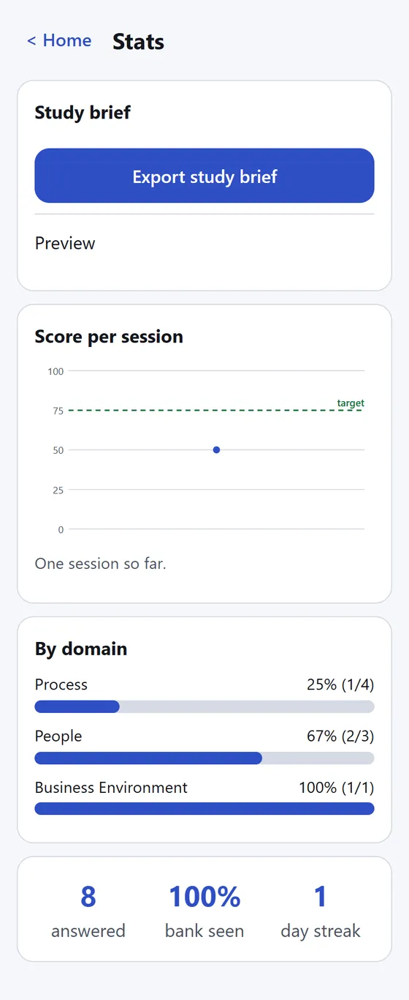

Purpose
Practice questions for the PMP exam, with my own history of what I've seen, missed and flagged, stored in my own database.
The app weights practice toward unseen and missed questions, scores each session by domain, and exports a compact summary I can paste into an AI chat for tutoring.
Screenshots


Captured in the app's local demo mode with its 8 sample questions. No real study data.
What it does
- Practice modes. Mix, Unseen, Missed, Flagged, or one domain. Sessions of 10, 20 or 50 questions.
- Weighted "Mix". Questions I haven't seen, or got wrong last time, are three times as likely to come up.
- Single and multi-select. Multi-answer questions say "Choose 2" and need an exact match to count.
- Explanations. Optional "AI summary" cards (why, why not each wrong choice, a one-line tip) with the original explanation collapsed underneath.
- Flag for review. Star any question and drill the flagged set later.
- Results. Score, by-domain breakdown, and a "Redo missed" button.
- Stats. Score per session (SVG chart with a 5-session average), accuracy by domain, answered count, share of the bank seen, day streak.
- Trend. Home screen shows accuracy over the last 100 answers versus the 100 before.
- Study brief. One tap copies a short plain-text summary: weakest sub-topics, questions I keep missing, flagged items.
- Import. Paste or upload JSON. It is validated first and reports valid and invalid counts before anything is merged.
The question bank lives in the database, not in the repository. The repo ships only eight original sample questions for demo mode.
Stack
- Vanilla JS (ES modules)
- Firebase Authentication (Google)
- Firebase Realtime Database
- Firebase JS SDK 10.12
- Web app manifest (installable)
- Inline SVG charts
- No framework, no build
Architecture
Normal mode
Demo mode (localhost only, ?demo=1)
All reads and writes go through one small storage module with two interchangeable implementations. The UI never knows which one it is using.
Security & privacy
- One account only. The page checks the signed-in account, and the database rules enforce it. Other accounts see only "This app is private."
- Deny by default. The database root is closed to reads and writes. Only the study data branch opens, and only to that one account.
- Not indexed. The page carries a
noindextag. - No HTML injection. All text is added with
textContent, neverinnerHTML. Question images load only fromhttps://URLs. - Validated imports. Imports check types and ranges, strip characters that are illegal in database keys, cap AI-summary fields, and never overwrite existing history.
- Destructive actions are gated. Deleting the bank means typing DELETE.
- Demo mode is local. It only activates on localhost.
The Firebase web config is public by design. Access control lives in the database rules, not in hiding that config.
Notable engineering decisions
- Rules, not just UI. Locking the screen is cosmetic. The real gate is server-side database rules.
- One storage seam. Firebase and the local demo implement the same async API, so I can test the whole UI offline without touching real data.
- Targeted practice. Weighted sampling without replacement puts study time on weak spots instead of random recall.
- Sessions stored as records. Trend and streak stats are computed from saved session records rather than a running counter, so they can be recomputed or imported.
- Safe rendering helper. One tiny element builder creates every DOM node. That makes unsafe HTML injection structurally hard instead of a code-review chore.
- Tutoring loop. The study brief is deliberately short so it costs few tokens when pasted into an AI chat.
Status
Working. It is a private app behind a Google sign-in restricted to one account, so there is no public link.